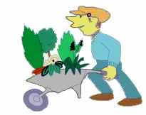
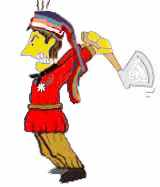
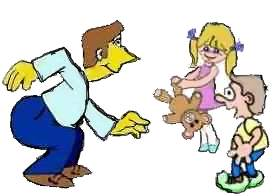
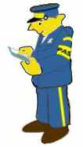
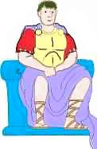
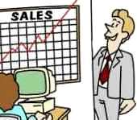
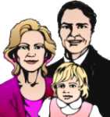
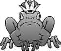

| Ethics Dictionary | Conditions Formulas | PTS Glossary | FAQs |
|
|
| Ethics Dictionary | Conditions Formulas | PTS Glossary | FAQs | |
Note: This chapter is from 'The Road to Clear", Level 2.
Responsibility
Responsibility: the concept of being able to care for, to reach or to be.
Also, the willingness to make and unmake barriers.
 |
Responsibility
is a Gradient |
Responsibility goes hand in hand with case progress. You could say, what is wrong with your pc is his inability to take full responsibility. In auditing you basically dig your pc out from under all the things he couldn't take responsibility for in his past. This takes many different processes and techniques and lots of auditing to achieve; but progress as a pc, increased awareness, and pc taking more responsibility are almost interchangeable terms. When one of those go up the other two do as well. Eventually we want the pc to reach the state of Clear and Operating Thetan. Let us explain what we mean:
The definition of Clear is: A person who can be at cause knowingly and at will over mental matter, energy, space and time as regards his first dynamic. (see note)
Above that there is the state of Operating Thetan. The definition of Operating Thetan is: Knowing and willing cause over all his dynamics (Ideal state).
So as you can see from these definitions, the making of Clear and Operating Thetan is closely connected with the person taking responsibility on a broader and broader scale.
To see or assign the right cause of something is part of As-ising. Thus it is also necessary for a pc to take responsibility for things he has done to As-is the negative effects of it in order to make it to Clear.
 |
 |
 |
|
Joe, "Holy Fighter" |
Joe, "Save the Children" |
Joe, "Passport |
Past Identities
The reason people forget all about their past lives or even deny their
existence is due to 'Responsibility'.
The person has become unwilling to be responsible for having been different identities in the past. Lacking this responsibility for past identities (even this lifetime ones) he also looses his ability to take responsibility for other people in general. He starts to fight other identities in the present, becoming more and more selective of whom he can accept.
Not taking responsibility for any number of identities, he is more likely to dramatize these. They are outside his sphere of influence and takes a life of their own. They have been put on 'auto-control' so to speak. This is also called Valences.
In 'What is a Withhold' we discussed a guy, Joe, who was a member of the Holy Crusaders, then 'Save the Innocent Children Society' and finally a passport inspector; his example could illustrate that. He is an example of someone who failed to take responsibility for past identities and instead they started to take control of him.
When a person takes less and less responsibility for any of his dynamics he becomes less and less able to control and influence his dynamics and ends up a victim of them. Man is basically a thetan upon which the environment and dynamics can have no effect unless he himself 'allows it to happen' or pulls it in. This may sound like an impossible standard to meet, but when you investigate it in auditing you will find that the things other dynamics seem to have the power to do to him was preceded by him doing overts against these dynamics. This is behind being prone to certain types of injuries, recurring accidents and other repeated mishaps.
Example: If you have a person being chased by dogs all the time and being terrified about it, you can explore what the person has done to dogs. If he is in good shape he will pretty soon find the overts of beating or shooting or starving dogs. By having him take responsibility for these overts, he will mysteriously find, that dogs are not scary to him anymore and they have stopped chasing him as well. Now they come up to him in a peaceful manner to be petted.
The way one separates out from his dynamics and
his fellow Man is due to overts and withholds and a gradual falling away from
being able to take responsibility.
 |
"An auditor who goofs up |
An auditor who goofs up on one pc will be less willing to audit that pc and eventually all pc's. The cure in this case is no different from other cases. You will have to pull his overts and withholds he committed on that pc and on all his pc's and possibly other persons in his care in the past. When he again can take responsibility in the area, he can get himself straightened out technically.
It is a liability to audit a pc if he is permitted to hold on to withholds. Some auditors are afraid to find out about the pc, they are afraid of pulling withholds. Such an attitude, regardless of how tactful and social acceptable it may seem, makes a dangerous auditor. Unless open communication is established with the pc, he will develop withholds from the auditor and will participate less and less in the session, make no gains and may eventually 'blow'.
The auditor has to be courageous and insist upon getting the pc's withholds. He has to be willing to be the pc. That's what is meant with the Auditors Code's # 14 "Always grant beingness to the preclear in session." It also ties in with taking responsibility.
Responsibility is an important factor and product of running overts and withholds. By giving up withholds and taking responsibility for them, the pc is on a gradient taking more responsibility for his past, himself and gradually for all his dynamics. He is on his way to Operating Thetan.
Responsibility Scale
There is a scale, that shows this falling away from responsibility - from
Pan Determinism, where the person can take responsibility for his opponents and
himself at the same time, down to no responsibility. It goes like this:
No Previous or Current Contact - No responsibility or liability.
Pan Determinism - Full responsibility for both sides of game.
Self Determinism - Full responsibility for self, no responsibility for other side of game.
Other Determinism - something else giving the orders or directions that are followed to the letter - often unwillingly.
Valence (Circuit) - No responsibility for the game, for either side of the game or for a former self.
At the top you have no contact and thus no involvement or responsibility. You don't have to 'accept responsibility', for things you were never involved with. To falsely accept responsibility does not help anybody as it is an Alter-isnes, not an As-isness. In fact it is no better than taking the credit for somebody else's work.
 |
A good leader |
Next we have Pan Determinism.
It is defined as 1. Controlling the activities of two or more sides in a game simultaneously. 2. the ability to regulate the considerations of two or more identities, whether or not opposed. 3. full responsibility for both sides of a game. 4. a willingness to start, change and stop on any and all dynamics.
Here we have a powerful concept of the upper
levels of responsibility. We have telepathy, controlling people and things by
postulate and we have a total willingness and ability to be the other person -
total affinity.
 |
Being |
Next we have Self-Determinism. It is a healthy state of mind with its limitations, because we will soon get a fight on our hands. The other dynamics than Self are seen as opponents. One is Self-determined in any situation where he is fighting or competing. He is pan-determined in any situation which he is controlling.
("Self-determined on all dynamics" was
used early on in R. Hubbard's writings to mean Pan-determined).
 |
Soldiers
are examples |
When we talk about Other-determinism we have someone in a somewhat overwhelmed state. He is under orders and has given over control to someone or something other than self. No responsibility for self.
 |
Children can
often be |
A Valence is a person being someone else - unknowingly. It was briefly discussed under 'Help' on Level One. It is also covered in the text above. One has given up control of past beingnesses to the point where they have taken control, and the person is now being someone else unknowingly. It's not uncommon to find the pc in the valence of one of the parents. In such a case it is better described by reactive copying of the parent.
 |
A Prince made into a frog is |
Robots
There is a state of case known as a
Robotism. A Robot is basically a machine operated by others.
When we talk about Robotism, we talk about a person that only operates when given orders. He may crave orders to be under somebody else's control and avoid own responsibility. The motivation behind this is, that he is afraid of what he might do on his own. He may have evil impulses that he knows has to carefully keep under control. If he would act on his own he is afraid to dramatize these harmful impulses. It accounts for a person with very low responsibility and a slow and inefficient way of getting things done. The phenomenon is in the band of 'Other-determinism' and 'Valence.'
 |
A Robot
"can do no wrong". |
Robotism and 'Harmful impulses' are best addressed in an advanced type of confessional called 'Fixated Purpose RD (part of ST4). In FPRD you pull the overts and withholds of the pc. When that has been completed for one Chain of incidents, the auditor applies an additional technique to make it possible for the pc to find and handle the harmful of evil impulse behind these overts and withholds. To be able to master this technique, the auditor first has to be completely familiar and skilled in Confessional procedure of ST2.
Clear: The technical definition of Clear is now: a being who no longer has his own Reactive Mind.
|
|
|
|
|